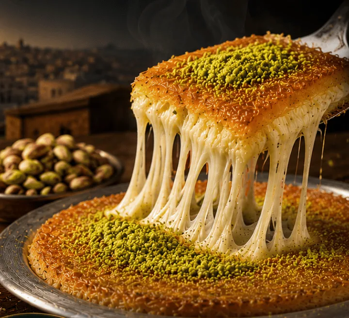
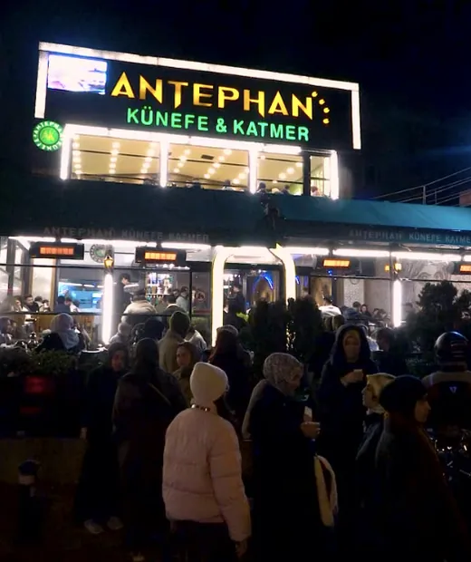

38 yıllık ustalık · 6 şehirde 32 şube
Gaziantep'ten Gelen Lezzet
Geleneksel tarifler, gerçek Antep fıstığı ve ustalıkla hazırlanan eşsiz tatlar. Her lokmada Antep'in ruhu.
- Gerçek Antep fıstığı
- Günlük taze üretim
- Kalite ve güven
- Geleneksel ustalık


Hakkımızda
Gaziantep'ten gelen özel lezzet
Türkiye'de 38 yıldan beri tatlı ve baklava sektörünün öncü lideri olmaktan gurur duyuyor, işimizi ilk günkü özen ve aşkla yerine getiriyoruz.
Güler yüzlü personelimiz ve tecrübeli ustalarımızla misafirlerimizin mutluluğunu her zaman birinci önceliğimiz olarak görüyoruz. Yılların tecrübesiyle Türkiye'nin bir numaralı künefe lezzetini sizlerle buluşturuyoruz.
- Yıllık tecrübe
- 38
- Şube
- 32
- Şehir
- 6
-
%100 Antep fıstığı
En kaliteli Antep fıstığı ile zenginleştirilmiş lezzet.
-
Taze günlük peynir
Özel künefe peyniri ile uzayan, eriyen ve damakta iz bırakan tat.
-
Çıtır kadayıf
İncecik tel kadayıfın tereyağında kızartılmasıyla eşsiz çıtırlık.
-
Özel şerbet
Geleneksel tarifle hazırlanan şerbet ile mükemmel denge.
Şubelerimiz
Size en yakın Antephan
6 şehirde 32 şube. Arayın, yol tarifi alın ya da uğrayın.
Aramanızla eşleşen şube bulunamadı.
Sosyal medyada bizi takip edin
@antephankunefe
Merak edilenler
Sıkça sorulan sorular
Franchise başvuru
Antephan'ı şehrinize getirin
Franchise görüşmeleri için bizimle iletişime geçebilirsiniz.